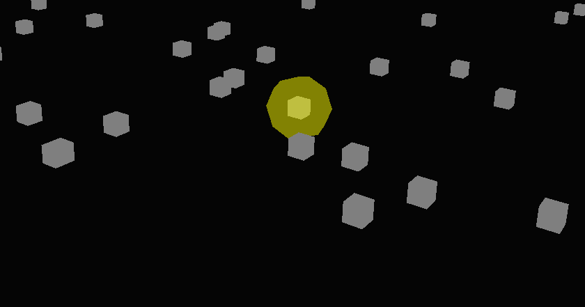
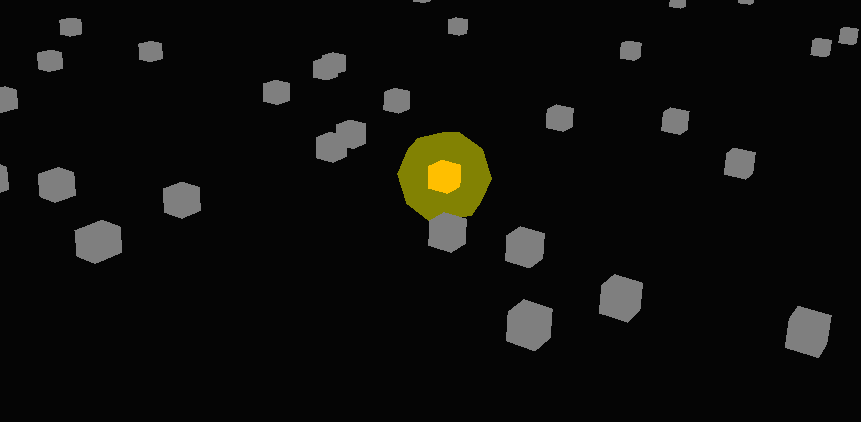
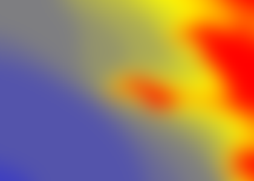
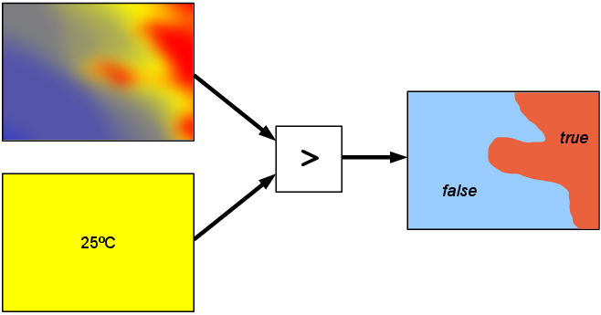

Thinking In Proto
Q: Why are you here?
A: You are looking for a way to program
Q: Why are you here?
A: You are looking for a way to program
In writing this tutorial, we have made several assumptions about you as a reader. First, we assume you are, if not entirely new to programming, entirely new to Lisp-like languages and many basic programming statements.
Realize also that although Proto may be similar to other languages, the way of thinking that must be used by Proto programmers is considerably different. Proto allows its user to look at both the individual devices separately, and at the group of devices as a whole.
Proto is very different from most other programming languages. For most people, even once they've started writing Proto code, it's a big jump to change how you're thinking and really take advantage of Proto's continuous space/time model. This tutorial will hopefully help you make that jump.
Proto is a language that makes it easy to write complex programs for spatial computers.
A spatial computer is a collection of devices distributed to fill space, where the difficulty of communicating between devices is strongly dependent on their distance. Examples of spatial computers include sensor networks, robotic swarms, cells during morphogenesis, FPGAs, ad-hoc wireless systems, biofilms, and distributed control systems.
Proto is a language for programming spatial computers using a continuous space abstraction. Rather than describe the behavior of individual devices, the programmer views the space filled by the devices as an amorphous medium — a region of continuous space with a computing device at every point — and describes the behavior of regions of space. These programs are automatically transformed into local actions that are executed approximately by the actual network of devices. When the program obeys the abstraction, these local actions reliably produce an approximation of the desired aggregate behavior.
If you want to learn more about Proto, please visit proto.bbn.com.
When you open WebProto, you'll see a screen such as:
The gray pane on the right is the Code Pane. That is where you enter the Proto program.
The empty black pane on the left is the Simulator Pane. That is where the program will be simulated when you "Run" it. To run the program, click the "Run Program" button in the top right.
When you run the program, you'll see some devices appear in the
Simulator Pane.

To navigate around the 3-D Simulator Pane, you can click-and-drag to move or scroll to zoom.
If at any time, you want to pause the execution of the Proto VM, just hit the space-bar.
Note: A current limitation of the simulator is that, once executing, the page must be reloaded before you can edit the code and re-run. Be aware that, when the page reloads, it will reload with the program that was displayed when the page originally loaded (not the currently-running program).
Compilation errors should give hints to help you debug your program. They are presented in red at the top of the screen if they occur.
Sensors and actuators are the inputs and outputs (respectively) to the Proto program.
We have pre-defined a set of test sensors for simulating a boolean sensor (e.g., button-press, motion sensor, etc.). In code they look like (sense i) where i is the ith sensor. To activate the sensor(s) in the simulator, select the device upon which you want to activate the sensor. It should turn white when selected.
Then, hit one of sensor keys:
| Key | Sensor Proto Code | Color of Device |
| t | (sense 1) | orange |
| y | (sense 2) | purple |
| u | (sense 3) | magenta |
You should see the device's color change when the sensor is enabled.
Try toggling sensor number one on some nodes in the example below:
You'll notice that the example also makes use of an actuator, (blue i). The blue actuator toggles a blue LED with the brightness of the LED being indicated by i, a number between 0 and 1 (inclusive).
Play around with the blue actuator a bit. There are also red and green actuators that behave identically. Note that, using the color actuators together results in a "blending" of the colors (think RGB style blending). What color do you think should be produced by the following program?
(all ,@forms): All forms are evaluated in parallel and the value of the last form returned.
(mux ,test ,true ,false): Evaluates both true and false expressions. When test is true, returns the result of the true expression, otherwise returns the result of the false expression. The true and false expressions must return the same type.
(if ,test ,true ,false): Restricts execution to subspaces based on test. Where test is true, the true expression is evaluated; where test is false, the false expression is evaluated. The true and false expressions must return the same type.
There is an important distinction here between mux and if. The difference is that, while if only evaluates the true branch, mux evaluates both the true AND false branches. That doesn't seem very important, but it is, especially when the branches contain actuators. What do you think will happen in the following program (all we've done is changed the if to a mux)?
Functions are a way of naming and re-using a behavior. They are great for code maintainability and readability.
Proto doesn't really have variables, like some other programing languages. However, like variables, there is a way to assign a name to a value, but unlike traditional variables, the value can never change.
(def .name (.arg ...) ,@body): Define a function name in the current scope, with as many arguments as there are arg identifiers. The body is evaluated within an extended scope where the arg identifiers are bound to arguments to the function. fun, which omits name, creates anonymous functions.
(let ((.var ,value) ...) ,@body): Extends scope, binding all var identifiers to their associated value in parallel. The body is evaluated in the extended scope. let* is like let, except that identifies are bound sequentially, so later ones can use earlier ones in their definition.
And now... a test!
Space is a big part of what Proto is about. Most of the programs that you write in Proto will manipulate space, doing things like naming regions of space, measuring distances, and moving information around from place to place. Proto is designed to make this easy by letting you work with fields.
A field assigns values to every point in a space. For example, let's say our space is a rectangular room, with an air conditioner over on the left wall and the sun streaming through the windows on the right wall. We can view the temperature in the room as a field: every location in the room has a temperature, and the temperature may be different from place to place. The figure below shows a temperature field, shading from coldest (shown as blue) to warmest (shown as red). The field is the whole collection of temperature values, each associated with its location.
Of course, we may not get to measure temperature everywhere. If we only have a few devices, and we build our network by scattering them around the room, then we get something more like what is shown below.

Now, say you've acquired the field depicted above, (temperature), that lists the temperature at each point in space and you want to perform some operation on the field. For instance, let's say you want to know all the places where the temperature is over 25 degrees celcius. In Proto, it's as simple as saying (> (temperature) 25). Graphically, it would look something like this:
What's important to know is two things: (1) The more devices that we have, the better that they approximate space; and (2) Some programs need better approximations than others, but a lot of programs will work well with very crude approximations.
A big part of the trick of writing good Proto programs is to think about the space, while remembering that it will be approximated.
Now let's start writing some programs that work with space in more complicated ways. Take a look at this code:
There are several new things in this code. For instance, the let assigns the variables inside it to a value. In this let statement, the variable d is set as the distance to the source. The function distance-to, as its name suggests, gives each device its own value of estimated distance to the source.
If we execute this program, and turn on sense 1 for a few devices, you will see that only devices within a very small select range from the source turn on their blue LED. If you turn on sense 1 on a fairly isolated device, you might not have any of the surrounding device LEDs turn blue at all. The program tells each device to figure out their distance to the sense 1 device(s), which they should call d, and that if their individual value of d is less than ten meters and greater than one meter, then they may turn their LEDs blue. Otherwise, the LEDs remain blank. Try expanding this range of blue LEDs by increasing the first parameter of the and statement.
The previous example shows how to select several close nodes, but what if we wanted to be more precise in our selection? What if, instead of taking three points or no points, based on how close the randomly placed points were to the src, we wanted just a single closest point, no matter how far or close it is to the src? This is where the nbr and the hood functions come in. These functions are used to tell a device exactly where each point within its communication range is relative to itself and what values these neighbors have calculated, giving the device fields of points and values to work with. Using these functions, we can select the point(s) that we want accurately. This demonstrates that ability:
This code is built to light up the device LED that is closest to the src (source) blue, and it introduces a wide variety of new functions.
We see our let operation again, except this time it defines two separate variables instead of just one. The first one we know already: variable d is the distance to the source device. The second definition is where most of the confusing bit comes in.
We are trying to assign the value of the shortest distance to the source to our new variable min-d (minimum distance). Let's work from the inside parentheses out in this definition. First, we have our (distance-to src). Note that you cannot use the predefined d here, because let defines everything at once, and so Proto will not recognize this variable as being already defined. Now that each device has established its own distance value (which happens to be the same as d). The nbr function gathers up these values from each device's neighborhood, returning a field that maps each point in the neighborhood to a distance value. All the functions starting with nbr in the Proto Language Reference create fields of values assigned to neighboring devices. In fact, instead of putting (nbr (distance-to src)) here, one could instead put (nbr-range), which again assigns a field of distances to neighbors, with the same outcome since for this program we only care about neighbors of the src. The min-hood+ function takes all of these values returned by nbr as pairs, (neighbor, distance away), and then takes the minimum "distance away" value as its return value. This is important: because of the + at the end of min-hood, the device excludes its own value from the calculation. Were this not the case, the closest device to itself would always be itself.
The broadcast function sends information from the src devices to all of the other devices. If there is one src device, then every device ends up with the same value; if there is more than one src device, then every device ends up with the value from the nearest src device. Here, in our closest function, we are using broadcast to have the src tell every other device what the closest device to itself is. Every device computes the min-hood+ expression, to find out how close is its closest neighbor (besides itself) to the source. Only the src devices send the value.
The main part of this function, (after the let) is actually quite simple. All it does is have each device ask itself, ``Is my distance to the source equal to the minimum distance to the source, and is the minimum distance to the source not infinity? If so, turn LED blue; if not, leave LED blank.'' This part: (not (= min-d (inf))) stops the devices from automatically turning blue, because before any source is identified, the minimum distance to the source is infinite, and all the devices' d variables are also infinite and therefore equal to min-d. This test tells the program to wait until a src exists, which will cause min-d become finite. Remember that if you want to look over any of the nbr, hood, broadcast or not functions, or even how to use constants such as inf, you can find them all in the Proto Language Reference.
When executed, this produces a field of devices, shown as little red dots. Right now, all the devices know that min-d is equal to infinity, and therefore all their LEDs are off. Turn sense 1 on on any device. After a few seconds, a blue LED goes on on the closest device to the src, no matter how close or far that device may be. You can turn sense 1 on or off at several devices, and their closest neighbors' LEDs will turn on or off accordingly, since the broadcast is taking the value from the nearest source. Take note, however, that if you isolate a sense 1 device to the point that all other points are outside of its radio-range, no min-d can be found. Also, turning on two sense 1 devices close together may allow only a single min-d value (depending on where exactly the closest neighbors are), so only one of the sensed points may light up its closest neighbor. Similarly, if a sense 1 device is with direct communication range of another sense 1 device, both will light their LEDs, since they both see the other being zero distance from the src.